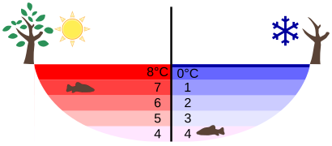
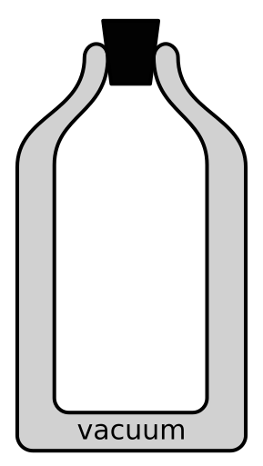

1. Heat vs. Temperature Distinction
Imagine holding a lit match and standing next to a warm ocean. The match is incredibly hot and could easily burn your finger, yet the warm ocean contains far more total energy because of its massive size. This difference highlights why we cannot simply rely on how hot something feels to measure its energy; we must separate the concept of total energy from the intensity of that energy.
| Characteristic | Heat | Temperature |
|---|---|---|
| Definition | The total kinetic and potential energy of all the molecules in a substance. | The average kinetic energy of the individual molecules in a substance. |
| SI & Common Units | SI Unit: Joule (\(\text{J}\)). Common: Calorie (\(\text{cal}\)). | SI Unit: Kelvin (\(\text{K}\)). Common: Celsius (\(\text{°C}\)). |
| Dependence on Mass | Depends on the mass (number of molecules) of the substance. | Independent of the mass of the substance. |
| Measuring Instrument | Measured using a Calorimeter. | Measured using a Thermometer. |
2. Thermometric Scales
When a doctor checks your fever, they might say your temperature is 99 degrees, but a scientist in a laboratory might record the room's temperature as 298. These numbers seem vastly different, yet they can represent the exact same level of hotness. We use different temperature scales specifically designed for everyday weather, medical use, and rigorous scientific research.
2. Fahrenheit Scale (F): Lower point = \(32\text{°F}\), Upper point = \(212\text{°F}\) (180 divisions).
3. Kelvin Scale (K): Lower point = \(273.15\text{ K}\) (\(\approx 273\text{ K}\)), Upper point = \(373\text{ K}\) (100 divisions).
Because the intervals must be proportional across scales, we equate the ratio of the temperature difference from the lower fixed point to the total number of divisions:
$$\frac{C - 0}{100} = \frac{F - 32}{180} = \frac{K - 273}{100}$$
Simplifying by dividing the denominators by 20 yields the universal conversion equation:
$$\frac{C}{5} = \frac{F - 32}{9} = \frac{K - 273}{5}$$
3. Mechanisms of Heat Transfer
If you leave a metal spoon in a bowl of hot soup, the handle quickly becomes hot to the touch. Meanwhile, the soup itself bubbles as hot liquid rises to the top, and you can feel the warmth radiating onto your face from a few feet away. Heat always finds a way to travel from a hotter object to a colder one, but it does so through three entirely distinct physical mechanisms.
| Feature | Conduction | Convection | Radiation |
|---|---|---|---|
| Material Medium | Requires a solid medium. | Requires a fluid medium (liquid/gas). | Does not require any medium (can occur in a vacuum). |
| Particle Movement | Particles vibrate in fixed positions; no actual displacement. | Actual physical movement of particles from hot to cold regions. | No particles are involved; energy travels as electromagnetic waves. |
| Path & Direction | Any direction depending on the temperature gradient. | Generally upwards (hot fluids become less dense and rise). | Travels in straight lines in all directions. |
| Speed of Transfer | Slow process. | Moderate process. | Fastest process (travels at the speed of light: \(3 \times 10^8\text{ m/s}\)). |
4. The Anomalous Expansion of Water
If you put a tightly sealed glass bottle completely filled with water into a freezer, the bottle will shatter when the water turns to ice. Almost all substances shrink and become denser as they get colder. Water is unique because it completely disobeys this rule right before it freezes, expanding instead of contracting.
• At \(4\text{°C}\): Water reaches its absolute maximum density of \(1,000\text{ kg/m}^3\).
• Below \(4\text{°C}\): Water behaves anomalously. It expands as it cools down to \(0\text{°C}\). Because its density decreases, ice at \(0\text{°C}\) is lighter than liquid water and floats on top.

5. The Thermos (Vacuum) Flask
When you pack a hot lunch for school, a special container keeps it steaming hot until the afternoon, even if it is freezing outside. Similarly, it can keep cold drinks icy all day long. This container acts as an ultimate barrier, meticulously engineered to block all three avenues by which heat tries to enter or escape.
| Flask Component | Primary Function & Mechanism Stopped |
|---|---|
| Double-Walled Glass or Steel Vessel | Traps a layer of space. Glass itself is a poor conductor of heat. Minimizes conduction. |
| Vacuum Between the Walls | Eliminates the material medium required for heat transfer. Prevents conduction and convection. |
| Silvered (Mirrored) Inner Surfaces | Reflects thermal energy back inward (if hot) or outward (if cold), minimizing heat loss/gain via radiation. |
| Insulating Stopper (Cork or Plastic) | Prevents heat loss by convection (escaping hot air currents) and blocks conduction at the opening. |

6. Worked Problems
1. Part (i): Convert \(37\text{°C}\) to Fahrenheit
Using the formula: \(\frac{C}{5} = \frac{F - 32}{9}\)
Substitute \(C = 37\): \(\frac{37}{5} = \frac{F - 32}{9}\) [1 Mark]
\(7.4 = \frac{F - 32}{9}\)
\(F - 32 = 7.4 \times 9 = 66.6\)
\(F = 66.6 + 32 = \mathbf{98.6\text{°F}}\) [1 Mark]
2. Part (ii): Convert \(212\text{°F}\) to Celsius and Kelvin
Using the formula: \(\frac{C}{5} = \frac{F - 32}{9}\)
Substitute \(F = 212\): \(\frac{C}{5} = \frac{212 - 32}{9}\)
\(\frac{C}{5} = \frac{180}{9} = 20\)
\(C = 20 \times 5 = \mathbf{100\text{°C}}\) [1 Mark]
To find Kelvin, use \(K = C + 273\):
\(K = 100 + 273 = \mathbf{373\text{ K}}\) [1 Mark]
1. Initial Cooling: As winter air cools the pond's surface, the surface water contracts, becomes denser, and sinks. This convection current continues until the entire pond reaches \(4\text{°C}\). [1 Mark]
2. Anomalous Phase: Below \(4\text{°C}\), further cooling causes the surface water to undergo anomalous expansion. It expands instead of contracting, meaning its density decreases. [1 Mark]
3. Freezing & Insulation: Because this colder water (\(0\text{°C}\) to \(4\text{°C}\)) is less dense, it remains at the surface. When it reaches \(0\text{°C}\), it freezes into ice. Ice is even lighter than water, so it floats. The ice layer acts as a thermal insulator, preventing the bottom water (which remains at \(4\text{°C}\)) from freezing, thereby protecting aquatic life. [1 Mark]
7. Give Scientific Reasons
The air we exhale is warm. Warm air expands, becomes less dense, and naturally rises upwards due to convection currents. Providing ventilators near the ceiling allows this warm, stale air to easily escape the room, while fresh, cooler, denser air enters through windows and doors closer to the floor.
Metals are excellent conductors of heat, so the main body of a cooking utensil gets very hot. Wood and plastic, however, are poor conductors (insulators) of heat. By using these materials for the handles, heat is not easily conducted from the hot pan to our hands, preventing severe burns when we grip the utensil.